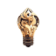

МолекулаАгрегаторы нейросетей
Молекула объединяет модели для текстов, изображений, видео и музыки. В одном аккаунте можно подобрать инструмент под этап работы, сохранить инструкции проекта и использовать готовые роли.
К задаче в МолекулеРаздел «Для архитекторов»: варианты ИИ для этой задачи, описания возможностей и переходы к обзорам. Сравните несколько решений на одинаковом примере.
Перечислите изменения, которые нужны в визуализации фасада, не затрагивая геометрию проекта. Укажите материалы, свет и окружение; получите ясное задание на правки, которое удобно обсуждать с визуализатором и сверять с исходной моделью здания.
Подготовь задание для правки рендера дома: заменить кирпич на светлый, смягчить вечернее освещение, убрать лишние деревья. Геометрию здания, размеры окон и положение входа оставь неизменными.
Молекула объединяет модели для текстов, изображений, видео и музыки. В одном аккаунте можно подобрать инструмент под этап работы, сохранить инструкции проекта и использовать готовые роли.
К задаче в МолекулеAITWO.CO помогает создавать визуальные варианты интерьеров и внешнего оформления зданий. Инструмент переводит эскизы в реалистичную подачу и предлагает выбор стилей и типов помещений. Основная задача связана с поиском образа пространства, когда исходный рисунок или изображение служит отправной точкой для обсуждения другого оформления.
«Genera» помогает представить оформление помещения.
«Hiber 3D» подготавливает трёхмерные объекты.
Для «MagiScan» сначала определите свою задачу и требуемый результат. Карточка относится к направлению «3D».
Genroom создаёт варианты оформления интерьера, фасада или двора на основе фотографии. Пользователь выбирает стилевое направление и получает реалистичную визуализацию изменений. При разборе результата следует сопоставлять планировку, окна и двери с исходником, рассматривая картинку как вариант образа, а не подтверждённый технический проект пространства.
«Kirin» представлен в разделе «Разработка». При выборе проверьте нужную операцию и условия работы с результатом.
Visualizee создаёт персонализированную архитектурную визуализацию с помощью ИИ. Инструмент предназначен для дизайнеров и архитекторов, которые работают над наглядным представлением проекта. В центре сценария находится визуальный образ архитектурной идеи: сервис формирует его под индивидуальную задачу, связывая проектный замысел с реалистично оформленным изображением.
Сравнивать «Archistar» с другими инструментами раздела «Разработка» удобнее на одинаковом исходном материале.
Для «CAD with AI» сначала определите свою задачу и требуемый результат. Карточка относится к направлению «Разработка».
«Designedbyai» готовит визуальные материалы по заданию. Дополнительно «Designedbyai» помогает представить оформление помещения.
«Interior Room Planner» помогает представить оформление помещения.
Для «newroom.io» сначала определите свою задачу и требуемый результат. Карточка относится к направлению «ИИ-ассистент».

ReimagineHome используют, чтобы искать решения для пространства. Ещё одно направление работы: менять фотографии с учётом выбранного оформления.
«DraftAid» готовит визуальные материалы по заданию.

Interior AI относится к инструментам, которые помогают искать решения для пространства. Ещё одно направление работы: получать изображения из словесного задания.
«Arch-E» помогает представить оформление помещения.
Сравнивать «ArchiVinci» с другими инструментами раздела «Генерация изображений» удобнее на одинаковом исходном материале.
Rendair предназначен для рендеринга в архитектуре, интерьерном дизайне и недвижимости. Платформа объединяет подготовку визуализаций с управлением проектом и совместной работой участников. Расчёт предложения по планам этажей дополняет этот процесс, связывая передачу исходных данных с обсуждением объёма рендеринга и дальнейшей организацией работы над изображениями.
«Archie AI» представлен в разделе «Разработка». При выборе проверьте нужную операцию и условия работы с результатом.
«SofaBrain» помогает представить оформление помещения.
Сравнивать «spatia» с другими инструментами раздела «Дизайн интерьера» удобнее на одинаковом исходном материале.
Maket помогает проектировать индивидуальные планы этажей с помощью ИИ. Платформа предлагает рекомендации по оформлению, материалам и затратам, а также рассмотрение нормативных требований. Предусмотрена совместная работа, позволяющая участникам разбирать планировку и сопровождающие сведения в ходе подготовки проекта.
Сравнивать «Oda Studio» с другими инструментами раздела «Дизайн» удобнее на одинаковом исходном материале.
Для «Remodel AI» сначала определите свою задачу и требуемый результат. Карточка относится к направлению «Дизайн интерьера».
Сравнивать «ReRender AI» с другими инструментами раздела «3D» удобнее на одинаковом исходном материале.
«Varys AI» помогает представить оформление помещения.
«Architect Render» представлен в разделе «Генерация изображений». При выборе проверьте нужную операцию и условия работы с результатом.
Сравнивать «Archonet» с другими инструментами раздела «Генерация изображений» удобнее на одинаковом исходном материале.
Для «DreamzAR AI Landscape Design» сначала определите свою задачу и требуемый результат. Карточка относится к направлению «Дизайн интерьера».
«Gepetto» помогает представить оформление помещения.
«Imagine 3D» представлен в разделе «Генерация изображений». При выборе проверьте нужную операцию и условия работы с результатом.
«Interior Render AI» помогает представить оформление помещения.
Сравнивать «NVIDIA Canvas» с другими инструментами раздела «Генерация изображений» удобнее на одинаковом исходном материале.
Для «OpalAi ScanTo3D» сначала определите свою задачу и требуемый результат. Карточка относится к направлению «Анализ изображений».
Сравнивать «Pool Planner AI» с другими инструментами раздела «Дизайн» удобнее на одинаковом исходном материале.
Visoid создаёт архитектурные визуализации средствами ИИ. Предлагаемый рабочий подход заменяет ручную подготовку сцены, настройку света и камеры автоматизированным формированием образа. Инструмент предназначен для визуального проектного материала, объединяя представление архитектуры с обработкой сцены в ходе подготовки наглядного изображения будущего или обсуждаемого пространства.
«AInterior Design» помогает представить оформление помещения.
Для «Beam AI (ibeam.ai)» сначала определите свою задачу и требуемый результат. Карточка относится к направлению «Разработка».
«CSM 3D» подготавливает трёхмерные объекты.

«AI Interior» помогает представить оформление помещения.
«Imageeditor» готовит визуальные материалы по заданию. Дополнительно «Imageeditor» помогает исправлять и оформлять фотографии.

RoomGPT предлагает варианты оформления пространства на основе фотографии и выбранного стиля. Пользователь передаёт снимок комнаты, дома или участка и получает визуальный образ изменений. После генерации стоит сравнить проёмы и геометрию с оригиналом: идея оформления требует проверки деталей, а не заменяет точный проект помещения.
Сравнивать «ArchitectAI» с другими инструментами раздела «Генерация изображений» удобнее на одинаковом исходном материале.
«ArchVizz» представлен в разделе «Генерация изображений». При выборе проверьте нужную операцию и условия работы с результатом.
«Indise» помогает представить оформление помещения.
Сравнивать «Interior AI - Design any space» с другими инструментами раздела «Дизайн интерьера» удобнее на одинаковом исходном материале.
Renovate AI показывает варианты изменения комнаты по её фотографии, предлагая разные стили оформления. В описании также указаны смета и доступ с мобильных устройств и через браузер. Используйте результат для обсуждения идеи, затем отдельно сверяйте размеры, конструктивные ограничения и состав работ; визуализация не заменяет измерения помещения.
Страница 1 из 1